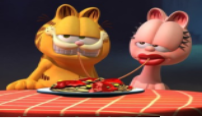
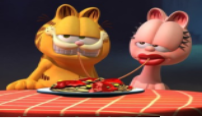

Garfiel fora de casa
Garfield: Fora de Casa é uma animação de 1986, baseada na famosa tira de quadrinhos de Jim Davis. No filme, Garfield, o gato preguiçoso e srcástico, fica irritado com seu dono Jon e, em um momento impulsivo, decide fugir de casa. Após se perder nas ruas, ele descobre o quão difícil a vida é sem o conforto de seu lar. Durante sua aventura, Garfield encontra novos amigos e enfrenta alguns perigos, mas, no final, percebe o quanto sente falta de Jon e seu lar. A história traz uma mensagem sobre amizade e o valor da família, com o humor característico do personagem.
Nova Jornada de Garfield.
.png)
Embora o filme mantenha a comédia e o humor característicos de Garfield, ele também traz temas mais profundos, como a importância da amizade, da adaptabilidade e da coragem. Garfield, normalmente avesso à mudança e ao esforço, se vê forçado a sair da sua zona de conforto para enfrentar novas situações. Isso oferece ao público uma reflexão sobre como, mesmo aqueles que preferem a rotina e o descanso, podem aprender a lidar com desafios inesperados.

 
